Opportunity
1,000+students reached through engineering, career, SDG and digital skills initiatives.
 Ayoola Timilehin Israel
Ayoola Timilehin Israel
Leadership and Impact
I build communities with the same principle I use for systems: clear purpose, strong feedback loops and measurable outcomes.
students reached through engineering, career, SDG and digital skills initiatives.
girls and young women supported through AI education, digital safety and mentorship.
students trained in practical AI through Windows on America programmes.
Selected leadership
Engineering communities
Programmes and education
Community building
Millennium Fellowship
Led the FUT Minna cohort as Campus Director, supporting fellows through leadership sessions and SDG aligned community projects while helping deliver learning experiences for more than 100 students.
Campus Director • Class of 2025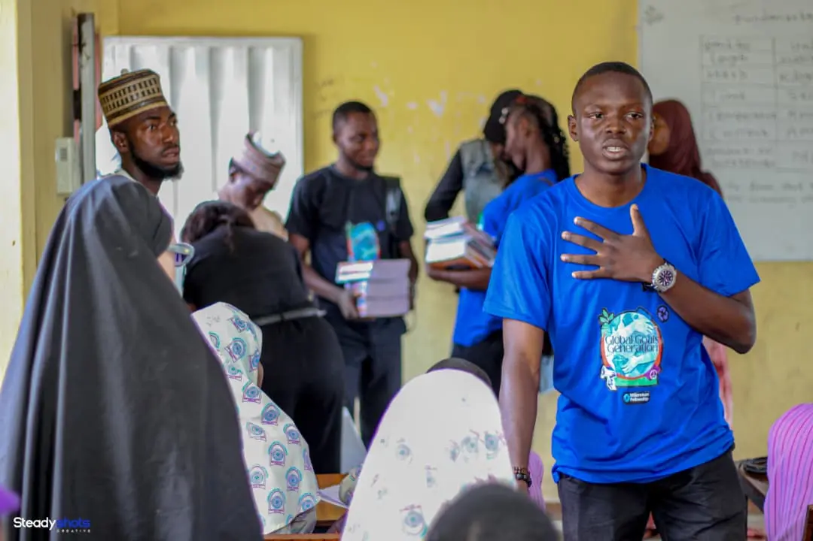
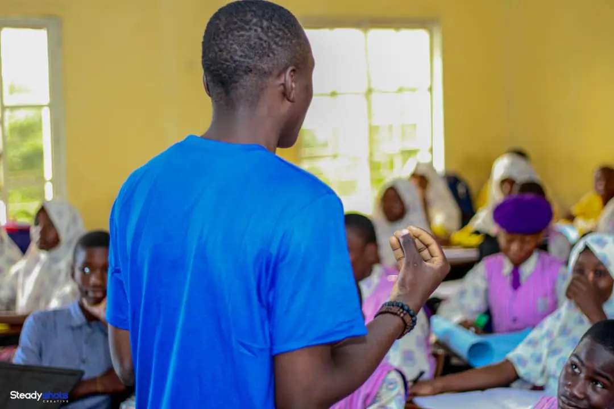
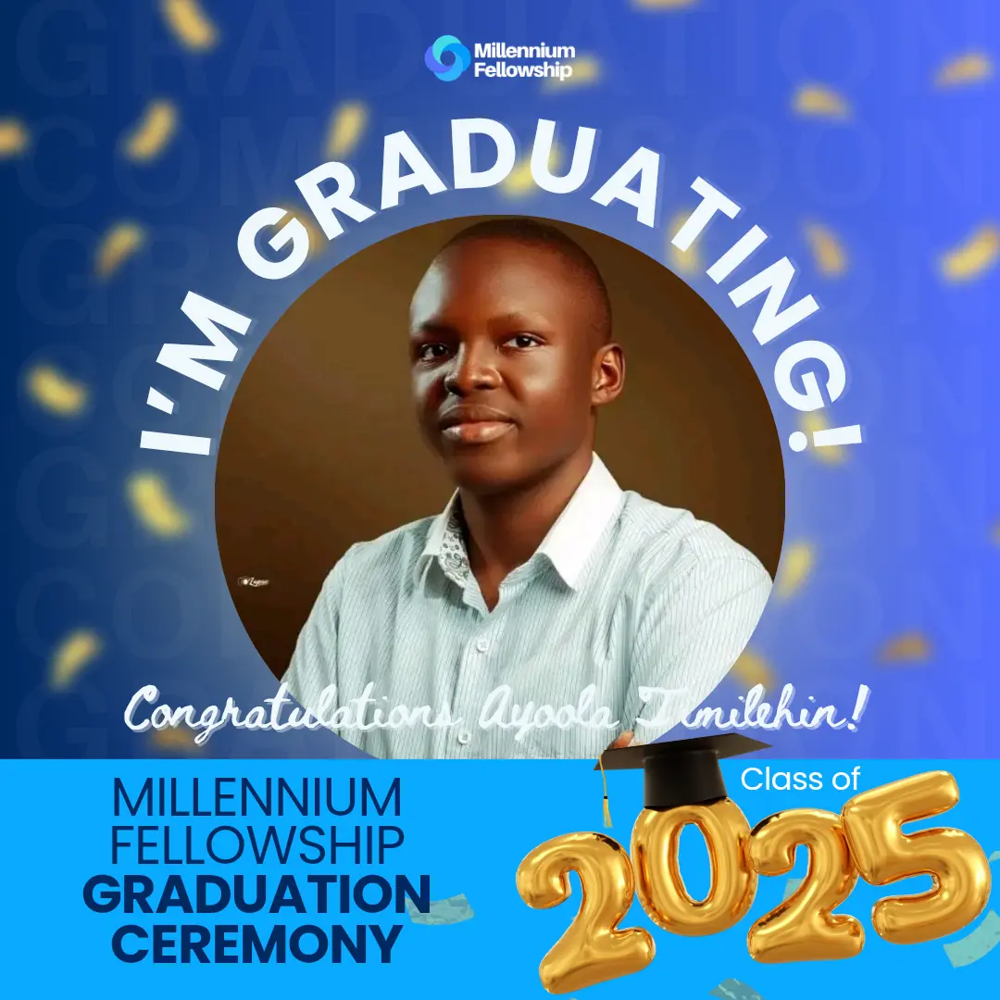
SDSN field story
Met with the Niger State Ministry of Agriculture to present our sustainable development work around tree planting, environmental awareness and practical climate action.
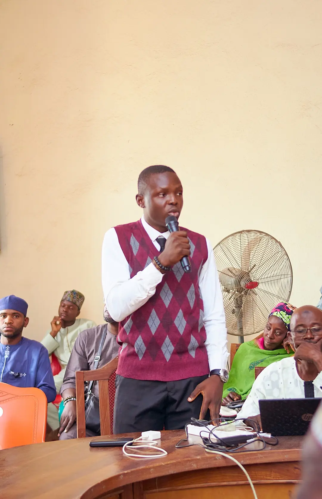
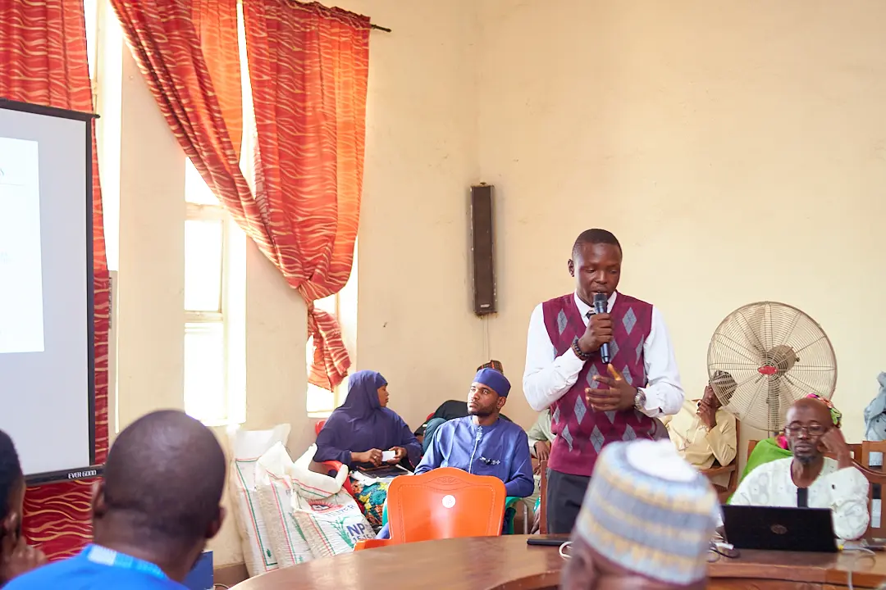
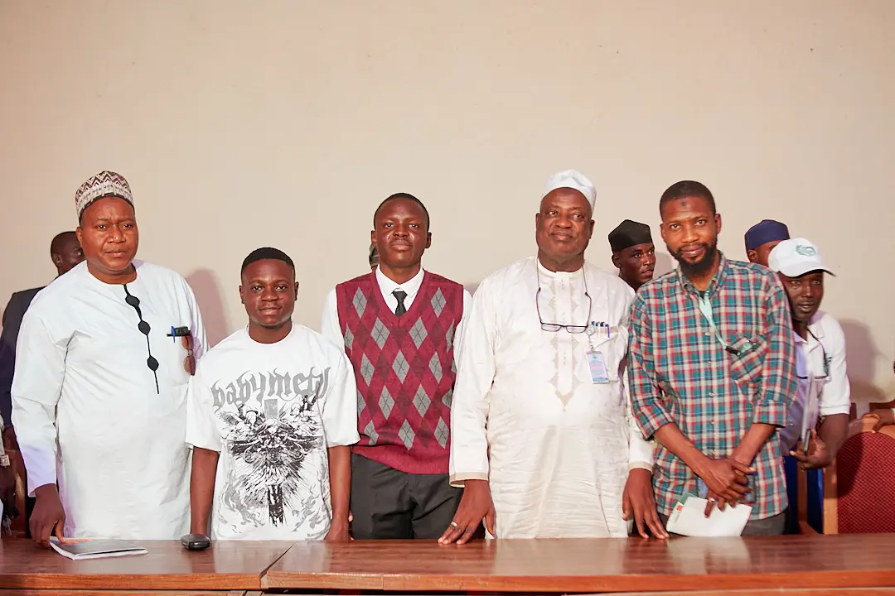
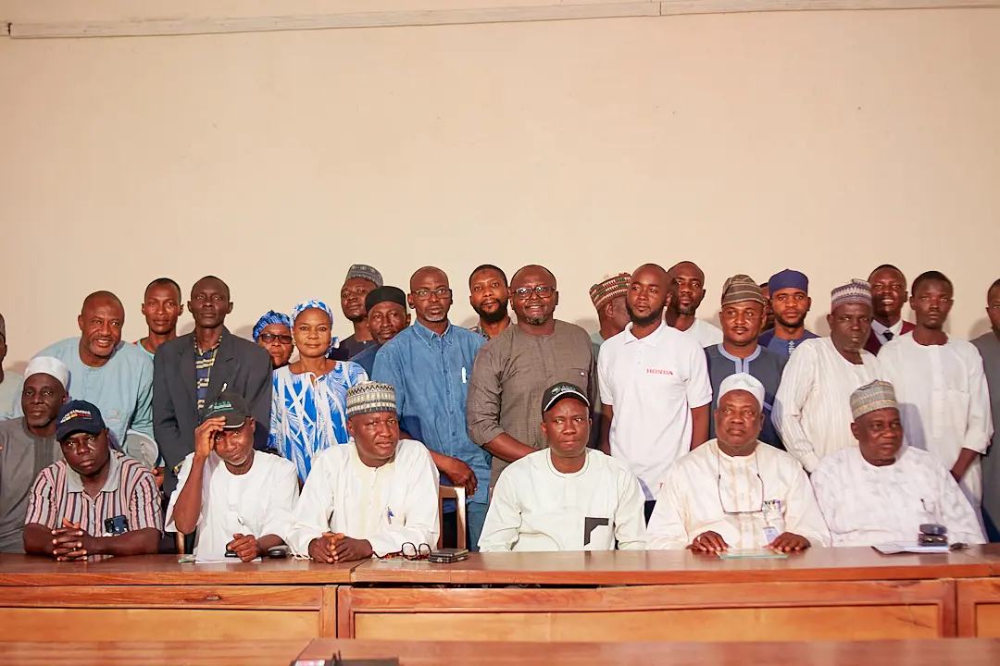
Mind Matters FUT Minna
Volunteered with Mind Matters FUT Minna during a mental awareness campaign encouraging students to talk, learn and heal together.
Volunteer • Mental health awareness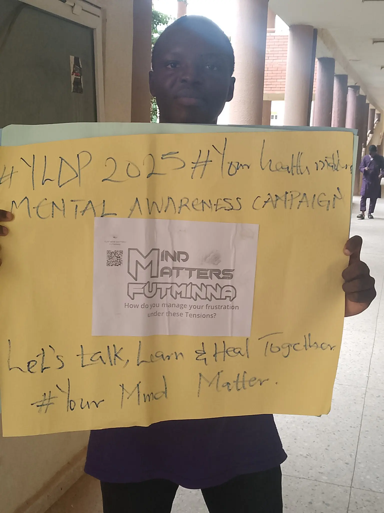
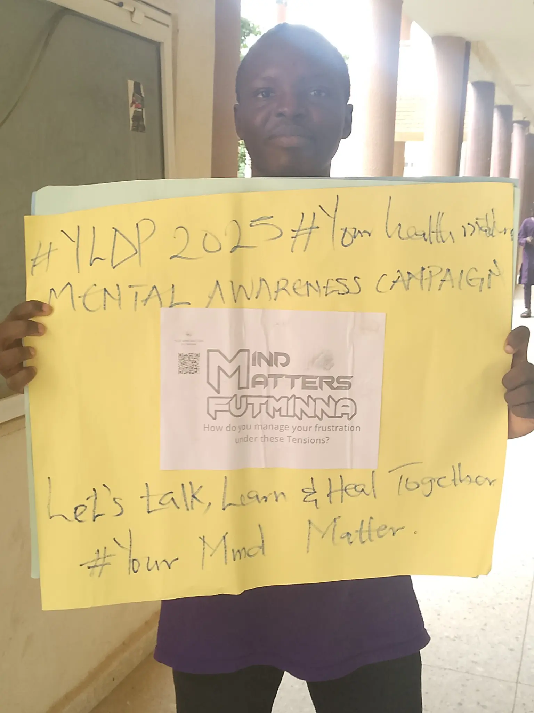
Summer With Her
Worked as an AI facilitator during the summer class, supporting practical learning and helping participants engage confidently with emerging technology.
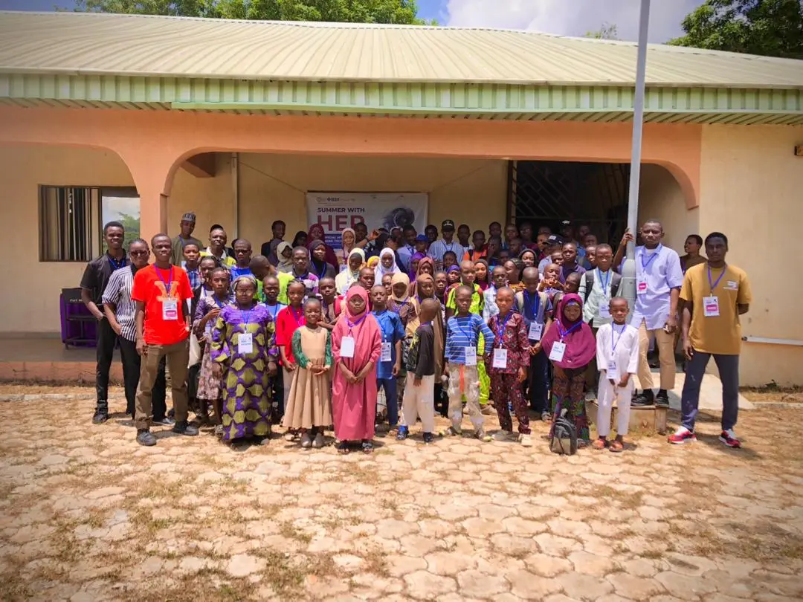
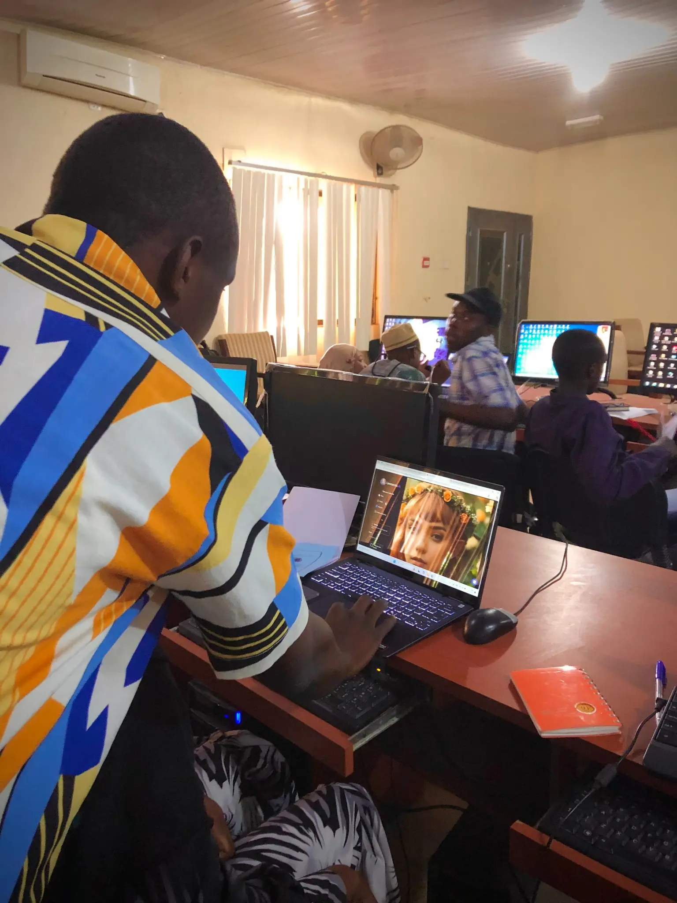
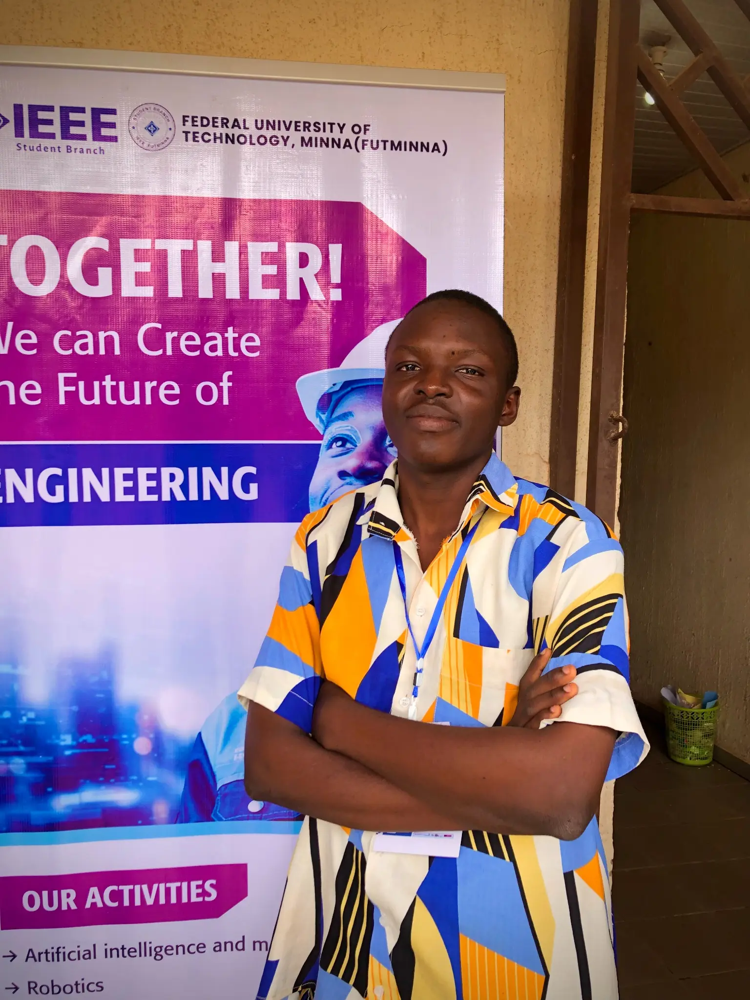
Impact archive
Project builds, workshops, media appearances and field moments will continue to grow here as more photographs are added.

More stories coming later
More stories coming later
More stories coming later